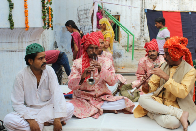
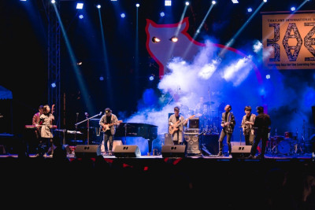

Popular Events
1. India International Trade Fair
This annual Fair is organised by India Trade Promotional Organisation for trade purposes. It draws large crowds from all over the country and is one of the most popular fairs in the whole country. Manufacturers, exporters, importers, traders etc participate in the fair showcasing their products and pitching their sales. There are state-wise stalls of every state where the cuisine, fabric, outfits etc of that particular state are exhibited. One if wishes to buy handicrafts, electronics, fabrics etc, then this is the perfect place as there are heavy discounts on the conclusion days.
2. Delhi Auto Expo
As the name says, this fair is organised for the automobile industry. Here, different kinds of automobiles are put on display that have been recently launched in the market. Every company is granted their separate pavilion where they can present their cars, bikes, special utility vehicles etc. Some companies see it as an excellent opportunity to unveil the new models of their products (automobiles). There are some big-ticket launches also which are done by well known celebrities of India. Delhi auto expo is not an annual fair, in spite of this, it is one of the most awaited ones by the people.
3. Delhi Book Fair
This is an annual fair which is organised in Pragati Maidan by India Trade Promotion Organisation. It is a heaven for book lovers as they can search out for their favourite books and get some attractive discounts also. Ranging from the rarest of rare books to the famous novels, everything is available here at unbelievable prices. Every year the book fair has a theme. If you are a tech freak and a book lover then we would like to tell you that audio books and e-books also make their appearance here.
4. Udyanotsav
This is a garden festival held every year in Rashtrapati Bhawan starting from mid-February going up to mid-March. The mughal gardens in Rashtrapati Bhawan at this time look like a colourful carpet of flowers. You will be awestruck to see a floral wall encircling the garden (it is more than 8 ft. in height). No mobile phones and cameras are allowed inside for security purposes so we it is advisable that you should leave them at your hotel/ home.
5. Surajkund crafts mela
Being organised annually, Surajkund Crafts Mela is a fair full of fun and frolic. Families and friends come together to enjoy the cultural extravaganza that is put up here. Every year a theme state is selected on the basis of which ornamentation of the whole place is done. The setup is done like a countryside marketplace with stalls, hawkers, muddified kuchcha floor to walk on etc. There are folk dances, delicacies, textiles, jewellery, and handicrafts from different states being sold up.
6. Phoolwalon ki Sair

It translates to ‘procession of flower sellers’ in English and is one of its kind. Both Hindu and Muslims celebrate this festival alike. The beautiful procession commences with the ear pleasing music of shehnai floating in the air as flowers are offered in YogMaya Temple. After the offerings, it passes through the Mehrauli Bazaar to reach tomb of Saint Qutab-Ud-Din Bakhtiyar Kaki. Finally, there is a conclusion ceremony at Jahaaz Mahal where Kathak dances, qawwalis performances etc are shown.
7. Qutab festival of music and dance
This event is a ‘performing arts’ festival organised at Qutub Minar every year by Delhi Tourism. Going up till the duration of three days, it sees the most spectacular performances by well known artists from the theatre circle of India and abroad. One can simply soak into the mesmerizing tunes of music by Indian and foreign maestros or can enjoy the resplendence of cultural dance performances. This fest is organised sometime in October/ November.
8. Delhi International Jazz Fest

Jazz fans, gear up for one happy and epic weekend because the Delhi International Jazz Festival is back for its 8th edition. Presented by the Indian Council for Cultural Relations in association with NDMC, the Jazz Fest is where renowned artists from across the world like Hevetter Omry Trio from Israel, Asia 7 from Thailand, Jazzmed from Austria and Go Back Project from Korea, among many others, will be performing this long weekend.
9. Vir Das Stand-Up Special
If there's one Indian comedian that's on everybody's must-watch-and-laugh list, it's got to be Vir Das. Delhi folks, you're in luck! Vir Das is coming to Siri Fort Auditorium on April 7 to knock us out with his punchlines. This will be part of The Love Tour, and will be one of the biggest shows of the tour!